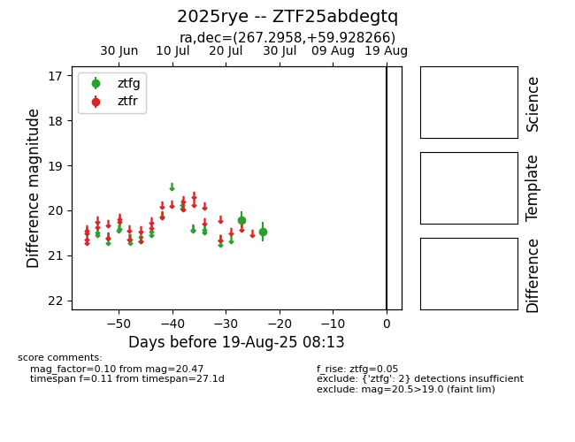

Target 2025rye at 2025-08-19 09:59, see:
FINK: fink-portal.org/ZTF25abdegtq
Lasair: lasair-ztf.lsst.ac.uk/objects/ZTF25abdegtq
ALeRCE: alerce.online/object/ZTF25abdegtq
TNS: wis-tns.org/object/2025rye
YSE: ziggy.ucolick.org/yse/transient_detail/2025rye
alt names
ZTF25abdegtq (ztf,fink)
2025rye (tns,yse)
coordinates:
equatorial (ra, dec) = (267.2958,+59.92827)
galactic (l, b) = (88.6795,+30.94820)
photometry
last ztfg=20.47
2 ztfg detections
